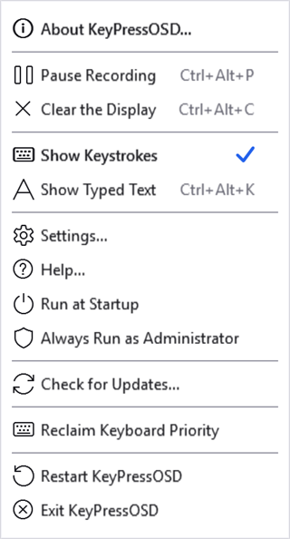
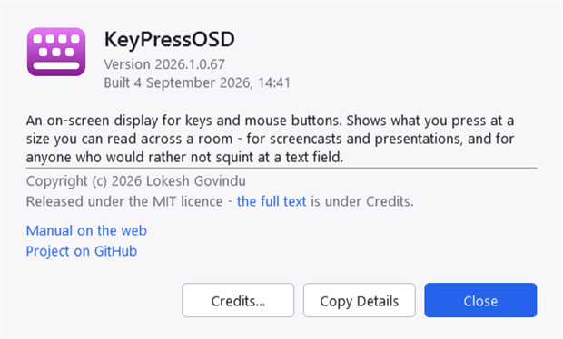
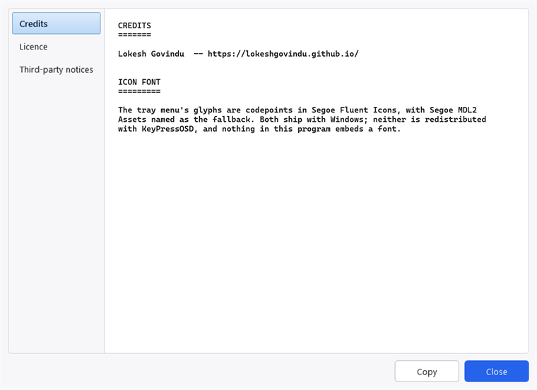
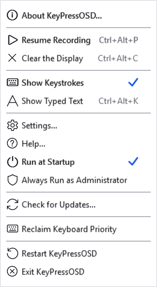
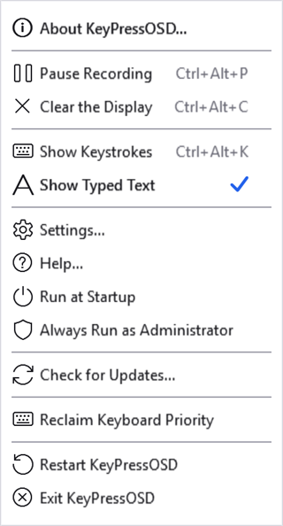
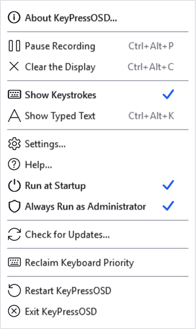
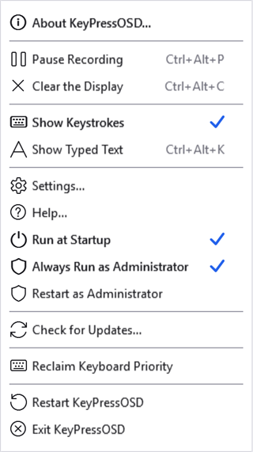

The tray menu
KeyPressOSD has no main window. The notification-area icon is the only way to reach it, so everything it can do is in that menu.
Right-click the icon for the menu. Double-click it to open Settings.
| Item | What it does |
|---|---|
| About KeyPressOSD… | Version, build date, and the credits and licence |
| Pause / Resume Recording | Stops or restarts capture. Shows its hotkey |
| Clear the Display | Empties the panel now. Shows its hotkey |
| Show Keystrokes | Names each key. Ticked when current |
| Show Typed Text | Shows the words. Ticked when current |
| Settings… | Everything else |
| Help… | Opens this manual |
| Run at Startup | Ticked when KeyPressOSD starts with Windows |
| Always Run as Administrator | Ticked when KeyPressOSD is set to sign in elevated |
| Restart as Administrator | Only there when that is set and this copy is not elevated |
| Check for Updates… | Asks GitHub whether there is a newer release |
| Reclaim Keyboard Priority | Puts this application's keyboard hook back at the front of the queue |
| Restart KeyPressOSD | Starts a fresh copy and stands down |
| Exit KeyPressOSD | Stops it |

The menu. The hotkeys are shown beside the commands they belong to, so the chords are discoverable without opening Settings.

About, the first item. Copy Details puts the version, the build and the runtime on the clipboard, which is the whole reason it is there — a bug report should not have to be transcribed by hand.

Behind Credits: the credits, the MIT licence and the third-party notices, read from the files that ship beside the executable rather than pasted into the program. The text selects and copies.
What the icon tells you
The icon is fuchsia normally and grey while paused. Grey because "switched off" is exactly what paused means, and a greyed-out version of an icon is how Windows says that everywhere else.
The grey is also lighter than the fuchsia, not merely less colourful — so the two are still distinguishable in a greyscale rendering and to anyone who cannot separate the two hues.
Hovering the icon shows the version, and says "paused" when it is and "administrator" when this copy is elevated. That last one is the only place the current copy's rights are stated outside Settings, and it is worth knowing about: the menu's tick beside Always Run as Administrator is a setting rather than a status. See below.

Paused. The first command has changed to Resume Recording and is drawn bold, because right-clicking the icon covers up the grey icon that was telling you the state.
Ticks and bold
The ticks are the only thing in the menu that says what state the application is in: which mode is current, and whether it starts with Windows. A ticked item is drawn semi-bold as well as ticked, because a tick is small and easy to miss at a glance while the weight actually reads.
About is semi-bold too. That is presentational — in a context menu bold conventionally marks the item a double-click invokes, which here is Settings.

The tick moved to Show Typed Text. The ticks live in the menu's image margin — the indent to the left of the labels — which is why that margin is kept even though reclaiming it would make the menu narrower.
Run at Startup
Ticked when KeyPressOSD is registered to start when you sign in.
The tick is read back from the registry every time the menu opens, rather than remembered. It can be changed from outside this application — another copy of it, or somebody editing the Run key — and a tick that lies about it would be worse than no tick at all.
Always Run as Administrator
Elevated windows — Task Manager, regedit, an administrator's terminal — show nothing at all, because Windows does not deliver their input to a hook in an ordinary process. This puts KeyPressOSD at the same level so that it does, and keeps it there.
Windows asks for consent once. Accepting it starts a new elevated instance, which waits for this one to close and then takes over, and that new instance registers a sign-in task so every later start is elevated too — with no further prompts, ever. Declining does nothing at all and says nothing, because a prompt is a question and "no" is an answer to it.
A scheduled task is what makes the silence possible. Windows will not start a shortcut or a registry entry elevated without asking every single time; a task registered to run with the highest privileges starts without a word. Registering one needs administrator rights, which is exactly what the single prompt buys.

Ticked. An ordinary toggle, with the same accent tick as Run at Startup above it — because this is a setting you can change, not a state you are stuck with.
The tick reads the task, not whether this particular copy happens to be elevated. Those two differ more often than you would think — every copy you start by hand, from a shortcut, from Explorer or from a search box, comes up as an ordinary program however the tick is set, because only the sign-in task can start one elevated without asking.
So the menu says both things. When the setting is on and the copy running is not elevated, a second row appears beneath it:

The two disagreeing. Restart as Administrator brings this copy up to the rights the sign-in task would have given it — one consent prompt, and no task is registered because it already is. The row is not there at any other time, so seeing it means "not yet" and not seeing it means there is nothing to do.
Hovering the tray icon answers the same question without opening the menu: it reads "administrator" when this copy is elevated. The System tab in Settings says it in a sentence.
This matters most when keys are going missing rather than when nothing works at all. An elevated program keeps its input out of reach of an ordinary one entirely — so if another program's window shows nothing, or a chord it handles never appears, check this before anything else. Reclaim Keyboard Priority cannot help across that gap: it reorders the queue, and the queue is not what is stopping you.
Unticking it removes the task, and that is where Windows draws a line: a program cannot give up rights it already has, and there is no counterpart to "run as administrator" for going the other way. So unticking takes effect at your next sign-in — or straight away if you exit KeyPressOSD and start it again. Restart KeyPressOSD, below, starts a fresh copy but comes back at the same level for the same reason.
The same switch is on the System tab, where it can be turned off but not on: turning it on restarts KeyPressOSD, and doing that from inside the settings window would throw away any changes there you had not applied yet. See Known limitations.
Check for Updates
Asks GitHub whether a newer release has been published, and reports what it said.
Nothing checks unasked. This runs only when you choose it from the menu, never at start-up and never on a timer. An application that observes your keyboard has to be careful about what it does without being asked, and contacting a server the moment you sign in is exactly the sort of thing somebody would be right to object to.
It reports rather than installs. Replacing a running executable needs elevation for an installed copy and a signature to be worth trusting, and KeyPressOSD has neither — so the honest thing is to say that a version is out and offer to open the page.
By default it offers only finished releases. Offer pre-release versions, on the System tab, includes builds GitHub marks as unfinished — which, until the first stable release, is the only kind there is.
Reclaim Keyboard Priority
For when another program is taking a chord before KeyPressOSD sees it. The usual culprit is a third-party Alt+Tab replacement: it handles Alt+Tab and stops the keystroke there, so nothing behind it in the queue ever learns the keys were pressed.
Windows offers no way to ask for priority. Keyboard hooks are called in a chain, a new one goes to the front, and so the program that started last is asked first. That makes it a race rather than a setting — and restarting your Alt+Tab replacement is exactly the thing that loses it.
This wins the race again without restarting anything: it takes KeyPressOSD's hook out and puts it straight back, which moves it to the front. Nothing on screen is lost, and there is no consent prompt.
Two things worth knowing. KeyPressOSD never stops a keystroke — it passes every one along, on every code path — so being first costs the other program nothing and your Alt+Tab replacement keeps working exactly as before. And whoever installs last is first, so if you restart that program again, press this again. There is no timer doing it for you on purpose: two programs quietly fighting over the front of the queue would make the display work intermittently, which is far harder to understand than a menu item.
If you would rather it were settled at sign-in, make KeyPressOSD's task start after the other program's — a short delay on it in Task Scheduler does that.
Restart KeyPressOSD
Starts a fresh copy and stands down. The new one waits for this one to close before it takes over, so the tray icon goes and comes back rather than briefly appearing twice.
It is here because some changes need a fresh start, and without this row the answer would be "exit, then find the application again". Note what it does not do: it cannot come back with fewer rights than it has now. A program cannot lower its own, and every program Windows starts inherits them from whatever started it — so restarting an elevated copy gives you another elevated copy. To go the other way, use Exit KeyPressOSD and start it yourself, or simply sign in again.
Help
Opens KeyPressOSD.chm, the compiled manual, which ships in the release download beside the executable.
Two things can go wrong, and the menu tells them apart because they need different responses:
- The manual is not installed. A build made from source does not include it — the help is compiled separately by
tools/build-help.ps1and is not a compile output. - Windows has blocked it. Files that came from the internet are marked, and the help viewer shows every page of a marked file as blank. That looks exactly like a corrupt help file. Right-click the
.chm, choose Properties, and tick Unblock at the bottom of the General tab.
KeyPressOSD does not remove that mark for you. It is a Windows security marker, and quietly stripping one on your behalf is not this application's business.
Project on SourceForge ·
Report a problem · MIT licence ·
This manual is generated from docs/manual.